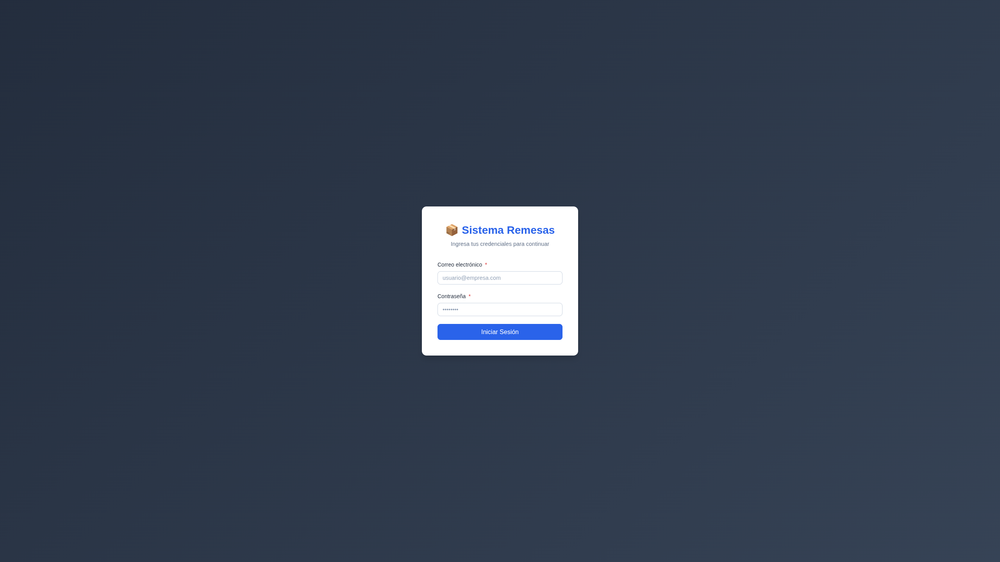
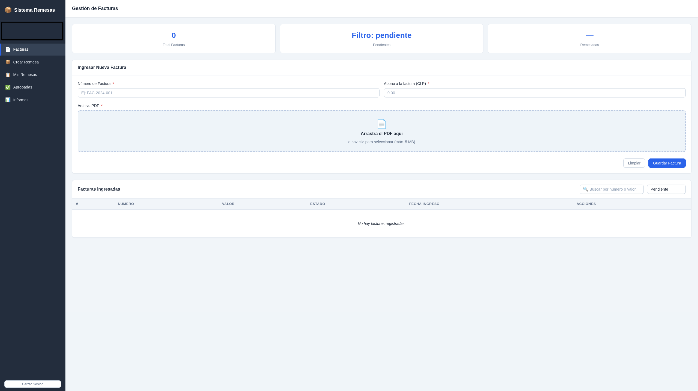
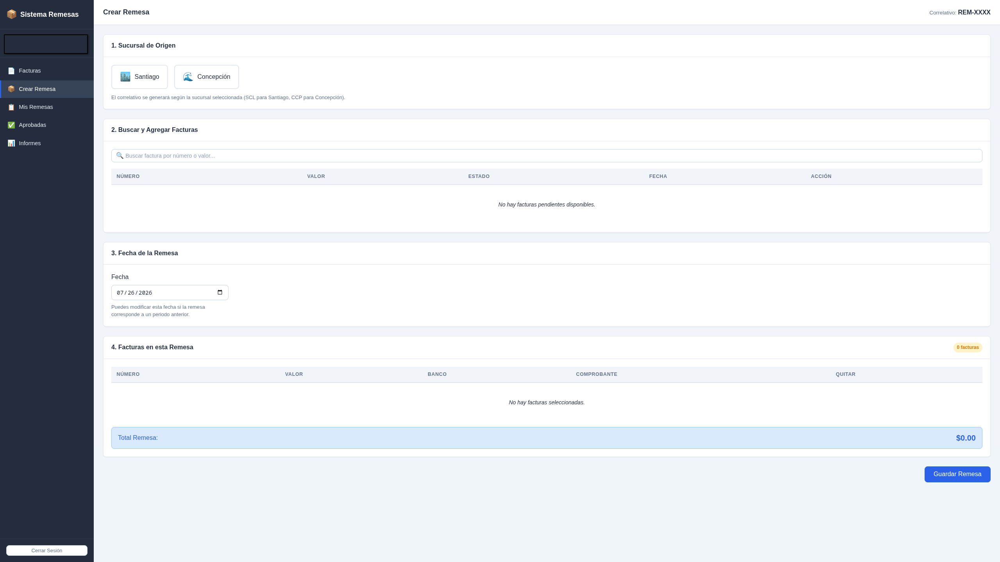
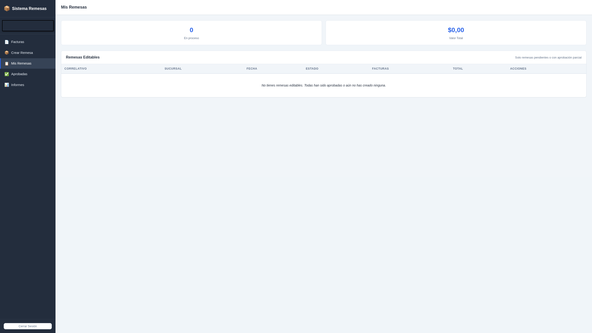
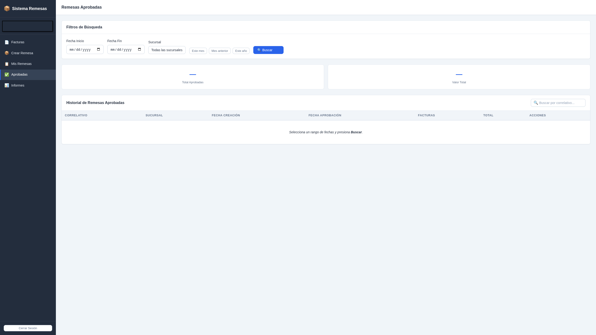

Web
Sistema gestión de remesa
Aplicación web para la gestión de remesas de pago entre sucursales. Permite registrar facturas, agruparlas en remesas, someterlas a un proceso de doble validación y generar informes por período y sucursal.
Ver código en GitHubProblema
Las sucursales de una organización necesitan gestionar remesas de pago con un flujo de aprobación seguro. Sin un sistema centralizado, el proceso manual generaba demoras, errores y falta de trazabilidad. Se requería una solución con roles diferenciados que garantizara una doble validación obligatoria antes de aprobar cualquier remesa, con notificaciones automáticas ante rechazos.
Qué se construyó
Sistema completo de gestión de remesas con autenticación por roles, CRUD de facturas, creación y edición de remesas, doble flujo de aprobación, notificaciones por correo electrónico vía Resend, informes por período y sucursal, y exportación de datos. Todo el backend corre sobre Supabase con PostgreSQL, políticas RLS y Edge Functions para las notificaciones. Despliegue automatizado en Vercel.




